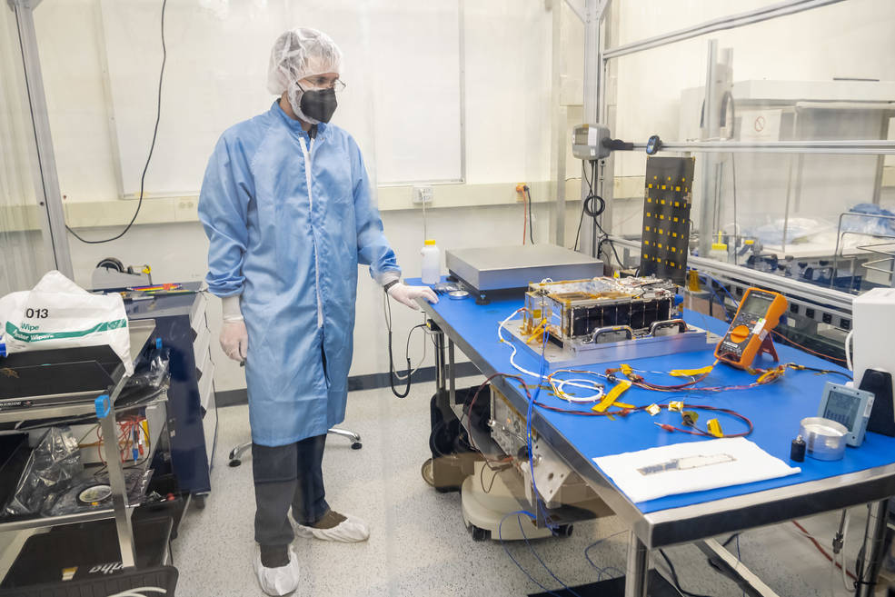
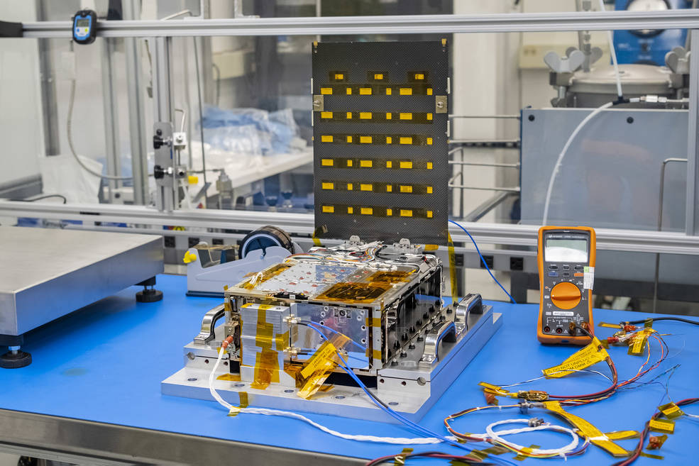
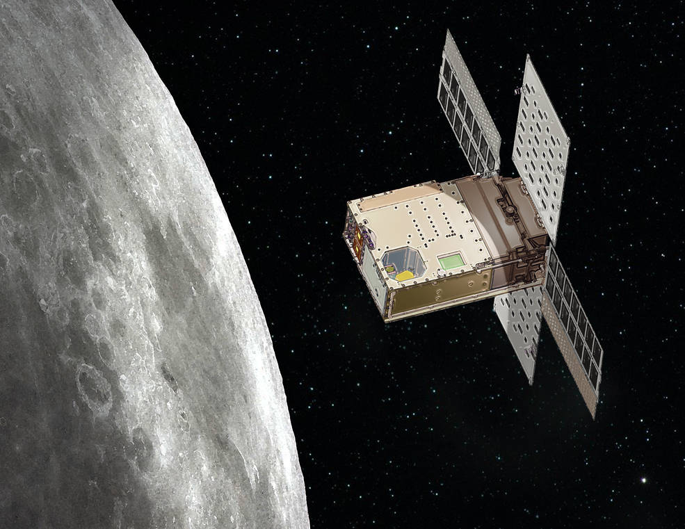

No início deste ano, a missão Lunar Flashlight da NASA passou por testes para prepará-la para o lançamento em novembro de 2022. O pequeno satélite movido a energia solar é mostrado aqui com seus painéis solares estendidos em uma sala limpa da Georgia Tech. Créditos: NASA/JPL-Caltech
Com lançamento previsto para novembro, a pequena missão de satélite usará lasers para procurar gelo de água dentro das crateras mais escuras do Pólo Sul da Lua.
Os pólos da Lua oferecem uma oportunidade tentadora para exploradores humanos: pode haver reservatórios de gelo de água lá que podem ser purificados como água potável, convertidos em oxigênio respirável e usados como combustível pelos astronautas. Esses reservatórios estão dentro de crateras permanentemente sombreadas – regiões onde o Sol nunca nasce acima das bordas das crateras.
Sabe-se que existe gelo de água abaixo do regolito lunar (rocha quebrada e poeira), mas os cientistas ainda não entendem se o gelo da superfície cobre o chão dentro dessas crateras frias. Para descobrir, a NASA está enviando o Lunar Flashlight , um pequeno satélite (ou SmallSat) não maior que uma maleta. Descendo sobre o Pólo Sul lunar, ele usará lasers para iluminar essas crateras escuras – muito parecido com um garimpeiro que procura um tesouro escondido ao apontar uma lanterna para uma caverna. A missão será lançada a bordo de um foguete SpaceX Falcon 9 em novembro.
“Este lançamento colocará o satélite em uma trajetória que levará cerca de três meses para atingir sua órbita científica”, disse John Baker, gerente de projeto da missão no Laboratório de Propulsão a Jato da NASA no sul da Califórnia. “Então, o Lanterna Lunar tentará encontrar gelo de água na superfície da Lua em lugares que ninguém mais foi capaz de procurar.”
Antes de ser integrado ao seu dispensador, que ejetará o pequeno satélite do foguete SpaceX Falcon 9 após o lançamento, o Lunar Flashlight foi abastecido com propulsor “verde” no Marshall Space Flight Center da NASA em Huntsville, Alabama, no início deste mês. Créditos: NASA
Órbitas com baixo consumo de combustível
Após o lançamento, os navegadores da missão guiarão a espaçonave além da Lua. Ele será lentamente puxado para trás pela gravidade da Terra e do Sol antes de se estabelecer em uma órbita ampla, circular e de coleta de ciência. Essa órbita de halo quase retilínea o levará a 42.000 milhas (70.000 quilômetros) da Lua em seu ponto mais distante e, em sua aproximação mais próxima, o satélite roçará a superfície da Lua, chegando a 9 milhas (15 quilômetros) acima do Pólo Sul lunar.
Os SmallSats carregam uma quantidade limitada de propelente, então órbitas com uso intensivo de combustível não são possíveis. Uma órbita de halo quase retilínea requer muito menos combustível do que as órbitas tradicionais, e o Lunar Flashlight será apenas a segunda missão da NASA a usar esse tipo de trajetória. A primeira é a missão Cislunar Autonomous Positioning System Technology Operations and Navigation Experiment ( CAPSTONE ) da NASA, que chegará à sua órbita em 13 de novembro, fazendo sua passagem mais próxima sobre o Pólo Norte da Lua.
“A razão para esta órbita é poder chegar perto o suficiente para que o Lunar Flashlight possa iluminar seus lasers e obter um bom retorno da superfície, mas também ter uma órbita estável que consome pouco combustível”, disse Barbara Cohen, Lunar Flashlight investigador principal do Goddard Space Flight Center da NASA em Greenbelt, Maryland.
Mostrado aqui no início de outubro, o Lunar Flashlight passou por atividades de abastecimento e testes finais em uma sala limpa do Marshall Space Flight Center antes de ser embalado em preparação para envio à Estação da Força Espacial de Cabo Canaveral, Flórida, no início de novembro. Créditos: NASA
Como demonstração de tecnologia, o Lunar Flashlight será a primeira espaçonave interplanetária a usar um novo tipo de propelente “verde” que é mais seguro para transportar e armazenar do que os propelentes espaciais comumente usados, como a hidrazina. Este novo propulsor , desenvolvido pelo Laboratório de Pesquisa da Força Aérea e testado em uma missão anterior de demonstração de tecnologia da NASA , queima por meio de um catalisador, em vez de exigir um oxidante separado. É por isso que é chamado de monopropelente. O sistema de propulsão do satélite foi desenvolvido e construído pelo Marshall Space Flight Center da NASA em Huntsville, Alabama, com suporte de integração do Georgia Tech Research Institute em Atlanta.
O Lunar Flashlight também será a primeira missão a usar um refletômetro de quatro lasers para procurar gelo de água na Lua. O refletômetro funciona usando comprimentos de onda do infravermelho próximo que são prontamente absorvidos pela água para identificar o gelo na superfície. Se os lasers atingirem a rocha nua, sua luz será refletida de volta para a espaçonave, sinalizando a falta de gelo. Mas se a luz for absorvida, isso significaria que esses bolsões escuros realmente contêm gelo. Quanto maior a absorção, mais gelo pode estar na superfície.
Esta ilustração mostra a Lanterna Lunar da NASA sobre a Lua. A missão SmallSat terá uma órbita muito alongada, levando-a a 15 quilômetros acima do Pólo Sul lunar para procurar gelo de água nas crateras mais escuras da Lua. Créditos: NASA
Ciclo Lunar da Água
Pensa-se que as moléculas de água vêm de material de cometa e asteroide que impactam a superfície lunar e de interações do vento solar com o regolito lunar. Com o tempo, as moléculas podem ter se acumulado como uma camada de gelo dentro de “armadilhas frias”.
“Vamos fazer medições definitivas de gelo de superfície em regiões permanentemente sombreadas pela primeira vez”, disse Cohen. “Poderemos correlacionar as observações do Lunar Flashlight com outras missões lunares para entender a extensão dessa água e se ela pode ser usada como recurso por futuros exploradores.”
Cohen e sua equipe de cientistas esperam que os dados coletados pelo Lunar Flashlight possam ser usados para entender como moléculas voláteis, como a água, circulam de um local para outro e onde podem se acumular, formando uma camada de gelo nessas armadilhas frias.
“Este é um momento emocionante para a exploração lunar. O lançamento do Lunar Flashlight, juntamente com as muitas pequenas missões de satélite a bordo do Artemis I, pode formar as bases para descobertas científicas, bem como apoiar futuras missões à superfície da Lua”, disse Roger Hunter, gerente do programa de Tecnologia de Pequenas Naves Espaciais do Ames Research Center da NASA. no Vale do Silício da Califórnia.
Mais sobre a missão
Em outubro, o Lunar Flashlight foi abastecido no Marshall Space Flight Center da NASA em Huntsville, Alabama, e está programado para ser lançado a bordo de um foguete SpaceX Falcon 9 da Estação da Força Espacial de Cabo Canaveral, na Flórida, não antes de 22 de novembro com o lander japonês Hakuto-R. e o rover Rashid 1 dos Emirados Árabes Unidos. A missão trabalhou com a Maverick Space Systems para fornecer serviços de integração de lançamento.
O programa Small Business Innovation Research da NASA financiou o desenvolvimento de componentes de pequenas empresas, incluindo Plasma Processes Inc. (Rubicon) para desenvolvimento de propulsores, Flight Works para desenvolvimento de bombas e Beehive Industries (anteriormente Volunteer Aerospace) para componentes específicos impressos em 3D. O Laboratório de Pesquisa da Força Aérea também contribuiu financeiramente para o desenvolvimento do sistema de propulsão Lunar Flashlight.
O Lunar Flashlight será operado pela Georgia Tech, incluindo alunos de graduação e pós-graduação. A missão é financiada pelo programa Small Spacecraft Technology dentro do Space Technology Mission Directorate da NASA.